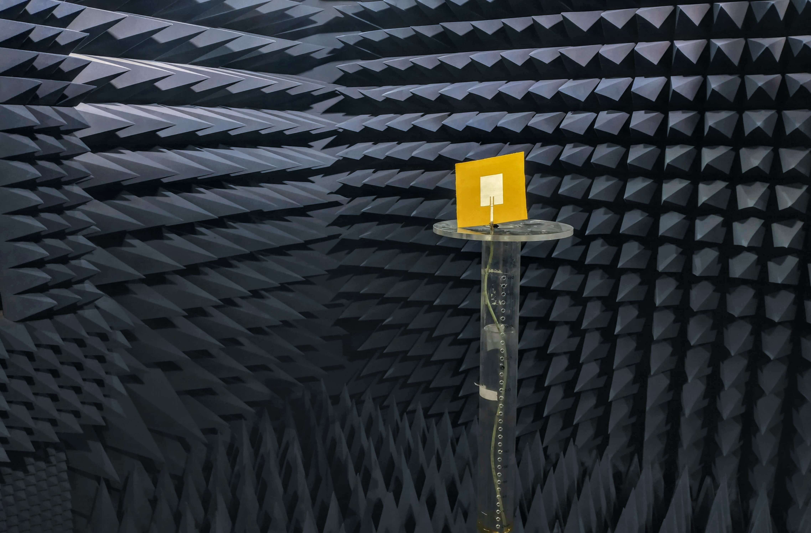

Why choose a project in "RF/Microwave" Electronics?
A project around Radio Frequency (RF) electronics will offer you learning opportunuties that extend beyond your degree and will be highly valued in industry.

Reasons to consider a project in RF engineering:
Highly Sought-After Technical Skills:
With RF underpinning 5G, satellite communication, and the IoT, there is a significant skill shortage in UK graduate engineers around RF. This is particularly true in the aerospace and defence industries. Doing your project in RF engineering will help you standout to graduate employers!A chance to Publish your Work:
All my project topics have strong links to research. If your project results in very good technical outcomes you will be given an opportunity to write and submit it for a research publications (possibly following further work).Opportunity to take part in National Competitions:
If you do a good job in your project, your work can be submitted for competitions on RF student projects.Links to funded post-graduate (PhD) studies:
With growing research in RF and microwave engineering at Glasgow, a project around RF could help you secure a (funded) PhD position.Access to Specialist Facilties and Industry-Standard Tools:
Experimental projects will give you hands-on exposure to state-of-the-art lab equipment.Potential External Scholarship Opportunuties:
If you have excellent grades you may be eligible for external (>$1,000) scholarships only open to students undertaking a project in RF/antenna engineering.